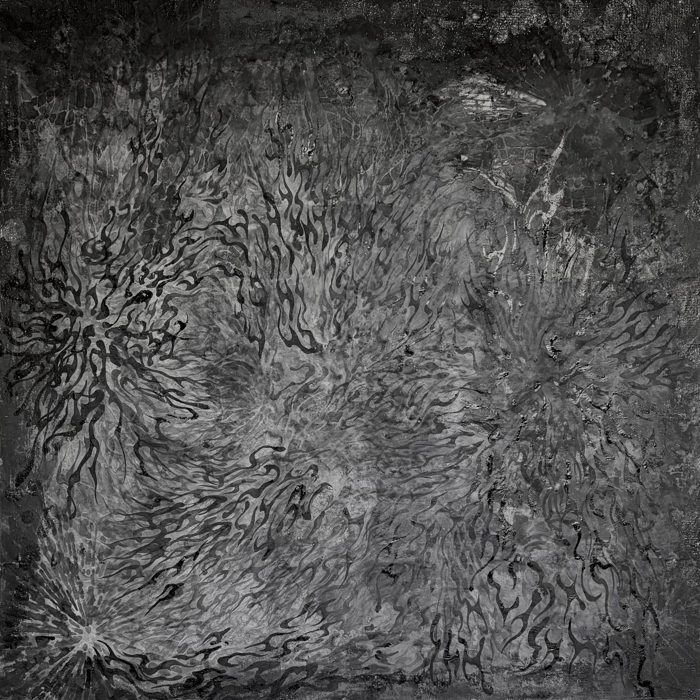

겹과 결 Layers and Grain
- 연도Year
- 2026
- 재료Material
- 석고 붕대, 석고, 먹, 펄, 석채
- 크기Size
- 65.1×65.1cm
- 시리즈Series
- 석고붕대·먹Plaster Bandage & Ink
서로 다른 성질의 존재와 사건이 관계를 맺으며 쌓여가는 사회의 모습을 재료의 층위로 표현한 작품이다. 석고 붕대 위에 반짝이는 펄로 이미지를 그리고, 그 위에 석채와 먹, 석고를 반복적으로 덧입혀 화면을 구성하였다. 펄의 반짝임은 눈에 띄고 화려하게 드러나는 대상과 사건을 상징하며, 석채의 단단한 물성은 오랜 시간 축적되어 견고해진 사회의 모습을 상징한다. 반면 먹과 석고는 앞선 흔적을 덮으며 새로운 층을 만들어내는 재료로 사용하였다.
펄과 석채로 만들어진 이미지는 새로운 층에 의해 가려지지만 완전히 사라지지는 않는다. 덧입혀진 석고와 먹 사이로 펄의 반짝임과 이전 이미지의 흔적이 부분적으로 드러나며 새로운 화면의 일부가 된다. 이는 새로운 사건과 관계가 기존의 것을 덮어가더라도 그 흔적까지 완전히 지워지지는 않는 사회의 모습을 나타낸다.
서로 다른 색과 질감, 빛의 반응을 가진 재료들은 한 화면 안에서 대비되면서도 서로의 존재에 영향을 주고받는다. 그려지고, 덮이고, 다시 드러나는 반복적인 제작 과정은 시간의 흐름에 따라 축적되는 사건과 관계를 시각화한다.
새로운 층이 쌓일수록 이전의 흔적은 희미해지지만, 동시에 작품의 깊이를 형성한다. 작품은 드러남과 가려짐이 반복되는 과정을 통해 서로 다른 존재와 사건이 각자의 흔적을 남긴 채 공존하는 사회의 모습을 표현한다.
This work expresses, through layers of material, a society that builds up as beings and events of different natures form relationships with one another. An image was drawn in glittering pearl pigment on plaster bandage, and then seokchae (mineral pigment), meok (Korean ink) and plaster were applied over it again and again to build the surface. The sparkle of the pearl stands for things and events that catch the eye and show themselves brilliantly, while the hard material quality of the mineral pigment stands for a society that has grown firm through long accumulation. Ink and plaster, on the other hand, were used as materials that cover earlier traces and create new layers.
The image made with pearl and mineral pigment is hidden by new layers, but it never disappears completely. Between the layers of plaster and ink, the sparkle of the pearl and traces of the earlier image partly show through and become part of the new surface. This reflects a society in which, even as new events and relationships cover over what came before, their traces are never wholly erased.
Materials with different colors, textures and responses to light contrast with one another on a single surface while still affecting each other's presence. The repeated process of drawing, covering and revealing again visualizes events and relationships that accumulate over time.
The more new layers build up, the fainter the earlier traces become, yet at the same time they give the work its depth. Through a process in which revealing and concealing repeat, the work expresses a society where different beings and events coexist, each leaving its own trace.